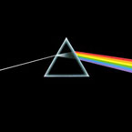

| Cette page est actuellement en cours de construction. Son auteur travaille à l'améliorer. |
| Image | |
|---|---|
 | |
| Origine | Aurore |
| Membres illustres | |
| El Coco (Fondateur) | |
| Ab Skyh (Fondateur) | |
| Chiumbo Bokara (Fondateur) | |
| Ryak (Fondateur) | |
| Gothmog (Fondateur) | |
| Usushesha (Fondateur) | |
| Borric (Fondateur) | |
Sommaire
Le panthéon d'Antimat
| Panthéon | |
|---|---|

|

|
| Chiumbo Bokara | El Coco |
| Mort le 20/04/308 ETU | Mort le 4/05/308 ETU |
| 1er roi d'Aurore | Un des plus puissants cdts |
| Panthéon (suite) | |
|---|---|

| |
| Gothmog | |
| Mort le 20/06/308 ETU | |
| Grand Commerçant et Démocrate | |
| Panthéon | |
|---|---|

|
 |
| Ab Skyh | Leir (Recrue d'Antimat) |
| Mort le 27/05/308 ETU | Mort le 27/06/308 ETU |
| Commerçant réputé son humour | Commerçant; il mourut d'une maladie incurable. |

Les membres d'Antimat
| Membres d'Antimat | |
|---|---|
| Ryak | Fondateur |
| Usushesha | Fondateur |
| Arkhange | Directeur |
| Borric | Associé |
| Zox | Associé |
| Tharqua | Associé |
| Membres d'Antimat (suite) | |
|---|---|
| Absynth Medusa | Associé |
| Magos Arcanov | Associé |
Grades
Fondateur: le plus haut garde de la coalition, à ce jour seulement les coalisés qui ont permis la création d'Antimat possède ce grade.
Directeur: grade donné à un seul membre pour organiser l'échange technologique et pallier à l'absence des fondateurs.
Associé: grade donné aux membres qui ont passés le teste des 15 jours et qui sont aptes à rejoindre définitivement la coalition.
Recrue: grade donné aux membres venant d'arrivé dans la coalition et passe le teste des 15 jours.
Antimat
Objectif
Antimat cherche le moyen d'utiliser l'Antimatière efficacement et de trouver le moyen de voyager de galaxie en galaxie.
Régence
Antimat est la régente d'Aurore depuis le règne du défunt roi Chiumbo Bokara, membre d'Antimat; aujourd'hui, c'est cette entitée qui règne sur Aurore...
Cession de la Capitale
Les fondateurs d'Antimat avec l'aval de leurs membres ont préféré céder la capitale au Magister Corum. Posséder cette dernière devenait plus un problème qu'autre chose. Le Magister Corum quitta Antimat et fonda avec le Stellarque John Doe un nouvel ordre galactique.
Situation actuelle
Antimat en tant que coalition a souhaité arrêter la politique, mais ses membres peuvent toujours y participer.